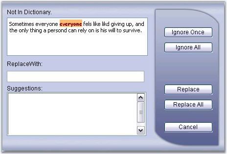

The control comes with a built-in rich dialog form with support for customizing the style of misspelled words through style properties. Just set the properties, which reflects the style settings for the misspelled words in the SpellCheck dialog box.
|
Property |
Description |
|
MisspelledWordCss |
Specifies a collection of style properties, that allows to customize the styles of the misspelled words. |

Figure 92: CSS styles applied for the misspelled word
Programmatic settings of few misspelled style properties are given below.
|
[C#]
SpellCheck.MisspelledWordCss.BackColor = System.Drawing.Color.Orange; SpellCheck.MisspelledWordCss.ForeColor = System.Drawing.Color.Brown; SpellCheck.MisspelledWordCss.Font = System.Drawing.FontStyle.Bold; |
|
[VB]
Private SpellCheck.MisspelledWordCss.BackColor = System.Drawing.Color.Orange Private SpellCheck.MisspelledWordCss.ForeColor = System.Drawing.Color.Brown Private SpellCheck.MisspelledWordCss.Font = System.Drawing.FontStyle.Bold |